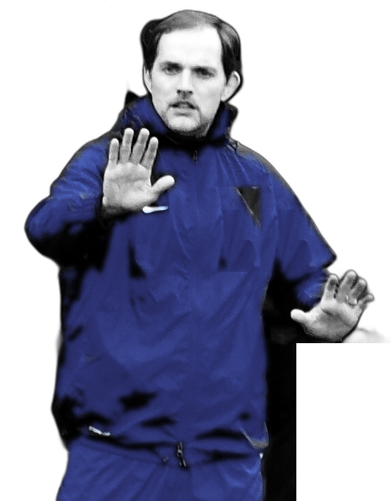
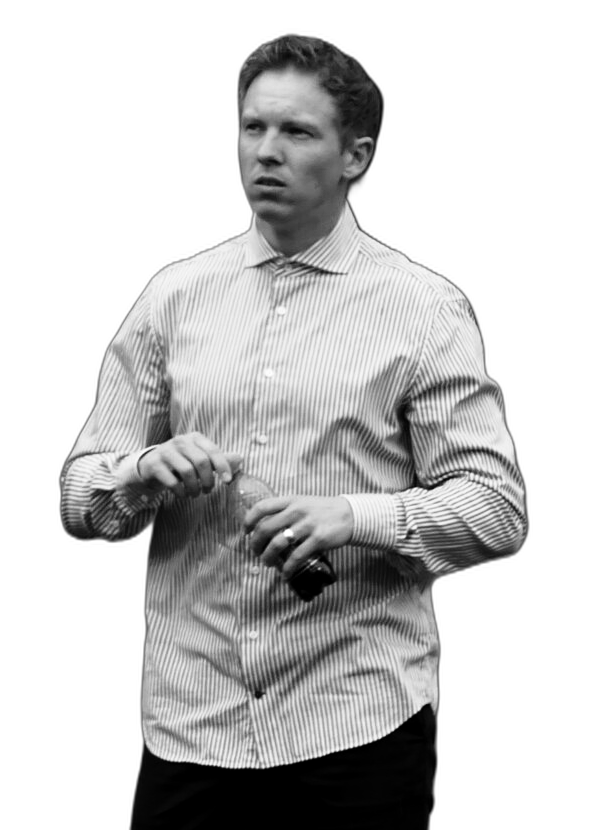
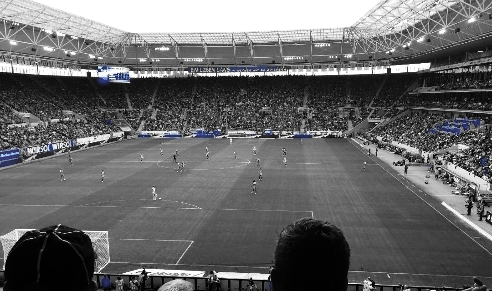

FICHA · JUGADOR
J. NAGELSMANN
DEFENSA
0
AÑOS
FIN
BOTAS Y RODILLA: DIBUJO

FICHA · ENTRENADOR
FOTO: SCHNEDERPELZ · CC BY-SA 3.0 (MODIFICADA)
REC
PRÓXIMO RIVAL
RIVAL
INFORME · FILIAL
VISOR, CAMPO Y CARPETA: RECREACIÓN
BANQUILLO

28
AÑOS · ENTRENADOR
FOTO: SILESIA711 · CC BY-SA 4.0 (MOD.)

HOFFENHEIM · SU ESTADIO
FOTO: ACFLO · CC0
28
11/02/2016
6 m × 3 m
PANTALLA, TABLETA Y CAMPO: RECREACIÓN
Fotos: Silesia711 (CC BY-SA 4.0) · Schnederpelz (CC BY-SA 3.0) · ACFlo (CC0), modificadas, vía Wikimedia Commons.
Rodilla, pantalla, tableta y campo: recreación.